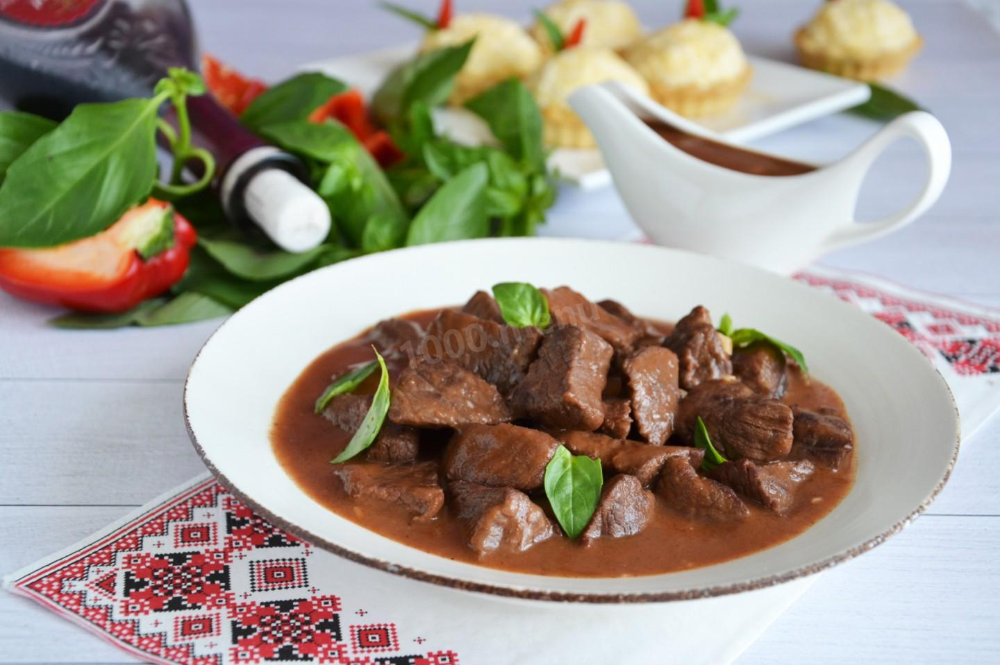

Говядина в красном вине

Ингредиенты (4 порции):
Филе говядины - 600 гр
Вино красное - 100 мл
Вода - 200 мл
Чеснок - 1 зубч.
Растительное масло - 2 стол.л.
Мука - 1 стол.л.
Томатная паста - 1 стол.л.
Паприка - 1 чайн.л.
Лавровый лист - 1 шт.
Гвоздичный перец (душистый перец) - 3 шт.
Соль по вкусу
Приготовление:
1. Говядину вымыть, обсушить и нарезать небольшими кусочками.
2. Обжарить мясо на растительном масле в сковороде до золотистой корочки. В конце посолить.
3. Всыпать муку и хорошо перемешать.
4. Всыпать в сковороду паприку, душистый перец и лавровый лист.
5. Влить вино и долить горячей воды, чтобы мясо было покрыто жидкостью. Тушить говядину на слабом огне под крышкой около 1 часа до готовности.
6. Чеснок пропустить через пресс.
7. Добавить в сковороду томатное пюре и чеснок. Перемешать и тушить еще 2-3 минуты.